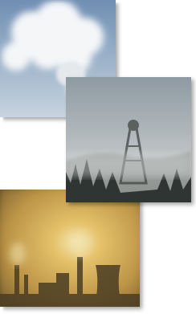

Coal mines, coke ovens, power plants, brick kilns, traffic and household fuels all release particles into the same shallow boundary layer. What those particles do to lungs and to clouds depends on what they are made of and how they age: how much water they hold, how acidic they become, and which gases they trade with the air around them.
My work at the Aerosol Lab, IIT (ISM) Dhanbad, follows PM2.5 and PM10 in Dhanbad, India's coal capital. Current work covers thermodynamic modelling of aerosol acidity and nitrate partitioning, source apportionment built on locally measured source profiles, and particle hygroscopicity.
I am a fourth-year PhD candidate supervised by Prof. Saifi Izhar. I designed and commissioned the Aerosol Lab — layout, instrument siting, power and UPS planning, procurement — and run it day to day. I have two first-author Q1 papers and review for Atmospheric Environment: X. Thesis submission is due December 2026, with the defence before March 2027.
Atmospheric chemistry of particulate matter is where my training meets: field sampling and laboratory chemistry (IC, OC/EC, ICP-AES, ED-XRF, δ13C), receptor modelling (PMF, ME-2), back-trajectory analysis (HYSPLIT, TrajStat), and aerosol thermodynamic models, all analysed in Python and R.
Ph.D., Environmental Science and Engineering, IIT (ISM) Dhanbad (2022–present)
M.Sc., Environmental Science, Central University of South Bihar (2022)
B.Sc. (Hons.), Botany, Gaya College, Magadh University (2020)
UGC-NET, Environmental Sciences (2024) GATE, Ecology and Evolution (2022)
Fine particulate matter is a leading environmental health risk in India, and the Indo-Gangetic Plain carries some of the highest PM2.5 burdens in the world.
Coal regions add their own signature: dust from open-cast mining, smoke from coal fires and combustion, and secondary aerosol formed from SO2 and NOx. Separating those contributions needs source profiles measured locally, not borrowed from elsewhere.
I study one year-long field campaign — paired PM2.5/PM10 sampling in Dhanbad, March 2023 to March 2024, N = 131 — through its chemical, optical, isotopic and thermodynamic properties. Aerosol pH, liquid water content and gas–particle partitioning come from ISORROPIA-II and HETP v1.0, cross-checked against E-AIM and MOSAIC's MESA/MTEM, with counterfactual runs that isolate how non-volatile cations control nitrate.
